Import R Packages
pacman::p_load(tidyverse, sf, tmap, httr, readxl, dplyr, stringr, rvest, knitr, spatstat, terra, raster, sparr, tidyr, kableExtra, ggplot2)In this take-home exercise, we are interested to investigate the spatial and spatio-temporal patterns of new businesses and firms established in Singapore for the first six months of 2025.
pacman::p_load(tidyverse, sf, tmap, httr, readxl, dplyr, stringr, rvest, knitr, spatstat, terra, raster, sparr, tidyr, kableExtra, ggplot2)set.seed(1234)| Dataset | Description | Source | Format |
|---|---|---|---|
| ACRA Information on Corporate Entities | Information of registered entities in Singapore, including location data | data.gov.sg | CSV |
| SSIC: Singapore Standard Industrial Classification 2020 | List of codes represented economic activity of business establishments in Singapore, 2020 version. | SSIC: Singapore Standard Industrial Classification | Excel |
| MasterPlan2019SubzoneBoundaryNoSeaKML | Polygon data with URA 2019 Master Plan Planning Subzone boundaries | data.gov.sg | KML |
folder_path <- "data/aspatial/ACRA"
file_list <- list.files(path = folder_path,
pattern = "^ACRA*.*\\.csv$",
full.names = TRUE)
acra_data <- file_list %>%
map_dfr(read_csv)The chosen business types are as the following table:
| SSIC 3-digit prefix | Description | Alias for this analysis | SSIC 4-digit sub-types | SSIC 5-digit sub-types |
|---|---|---|---|---|
| Retail (471) | ||||
| 471 | Retail Sale in Non-Specialised Stores | **Retail** | 4710: Retail Sale in Non-Specialised Stores | 47101: Supermarkets and hypermarkets |
| 47102: Mini-marts, convenience stores and provision shops | ||||
| 47103: Department stores | ||||
| 47104: Retail sale in other non-specialised stores n.e.c. | ||||
| Food & Beverage (561) | ||||
| 561 | Restaurants, Cafes, Food Courts, Food Kiosks And Bars | **Food & Beverage** | 5611: Restaurants and Cafes | 56111: Restaurants |
| 5612: Fast Food Outlets, Food Courts and Food Kiosks | 56112: Cafes | |||
| 5613: Pubs | 56121: Fast food outlets | |||
| 5614: Stalls Selling Cooked Food and Prepared Drinks | 56122: Food courts, coffee shops and canteens (with mainly food and beverage income) | |||
| 56123: Food kiosks mainly for takeaway and delivery | ||||
| 56130: Pubs | ||||
| 56140: Stalls Selling Cooked Food and Prepared Drinks | ||||
| Real Estate (681) | ||||
| 681 | Real Estate Activities With Own Or Leased Property | **Real Estate** | 6810: Real Estate Activities With Own Or Leased Property | 68101: Real estate developers |
| 68102: Operating of serviced apartments | ||||
| 68103: Letting of self-owned or leased real estate property except food courts, coffee shops and canteens | ||||
| 68104: Letting and operating of self-owned or leased food courts, coffee shops and canteens | ||||
| 68105: Collective portfolio investment funds with rental income | ||||
| 68106: Management of self-owned strata titled property (i.e. Management Corporation Strata Title) | ||||
biz_selected <- acra_data %>%
select(1:24) %>%
filter(str_detect(primary_ssic_code, "^(561|471|681)")) %>%
rename(date = registration_incorporation_date) %>%
mutate(date = as.Date(date),
YEAR = year(date),
MONTH_NUM = month(date),
MONTH_ABBR = month(date,
label = TRUE,
abbr = TRUE)) %>%
mutate(
postal_code = str_pad(postal_code,
width = 6, side = "left", pad = "0")) %>%
filter(YEAR >= 2024 & YEAR <= 2025) %>%
filter(date >= as.Date("2024-01-01") & date <= as.Date("2025-06-30")) ssic_data <- read_excel("data/ssic2020-classification-structure.xlsx",
sheet = "SSIC 2020 Structure",
skip = 4) # Skip the header rows
# Clean the data - remove any rows where SSIC 2020 is NA
ssic_data <- ssic_data %>%
filter(!is.na(`SSIC 2020`))
# Filter to get only level 5 codes (5-character codes)
level5_data <- ssic_data %>%
filter(str_length(`SSIC 2020`) == 5)
# Create the hierarchy columns
ssic_hierarchy <- level5_data %>%
mutate(
# Level 2: First 2 characters (2-digit number)
level_2 = str_sub(`SSIC 2020`, 1, 2),
# Level 3: First 3 characters (3-digit number)
level_3 = str_sub(`SSIC 2020`, 1, 3),
# Level 4: First 4 characters (4-digit number)
level_4 = str_sub(`SSIC 2020`, 1, 4),
# Level 5: Full 5-character code
level_5 = `SSIC 2020`,
# Keep the title for reference
level_5_description = `SSIC 2020 Title`
) %>%
dplyr::select(level_2, level_3, level_4, level_5, level_5_description)# Create lookup tables for each level
level_2_lookup <- ssic_data %>%
filter(str_length(`SSIC 2020`) == 2) %>%
dplyr::select(level_2 = `SSIC 2020`, level_2_description = `SSIC 2020 Title`)
level_3_lookup <- ssic_data %>%
filter(str_length(`SSIC 2020`) == 3) %>%
dplyr::select(level_3 = `SSIC 2020`, level_3_description = `SSIC 2020 Title`)
level_4_lookup <- ssic_data %>%
filter(str_length(`SSIC 2020`) == 4) %>%
dplyr::select(level_4 = `SSIC 2020`, level_4_description = `SSIC 2020 Title`)
# Join all the descriptions
ssic_final <- ssic_hierarchy %>%
left_join(level_2_lookup, by = "level_2") %>%
left_join(level_3_lookup, by = "level_3") %>%
left_join(level_4_lookup, by = "level_4") %>%
dplyr::select(level_2, level_2_description,
level_3, level_3_description,
level_4, level_4_description,
level_5, level_5_description)cat("\nSummary:\n")
Summary:Total level 5 business types: 1023 Number of level 2 categories: 81 Number of level 3 categories: 204 Number of level 4 categories: 382 # Left join ssic_final to biz_selected
# Convert primary_ssic_code to character and pad with leading zeros if needed
biz_with_hierarchy <- biz_selected %>%
mutate(primary_ssic_code = sprintf("%05d", primary_ssic_code)) %>% # Ensures 5-digit format
left_join(ssic_final, by = c("primary_ssic_code" = "level_5"))
# Check the result
str(biz_with_hierarchy)
head(biz_with_hierarchy)The Master Plan 2019 Boundary (No Sea) (KML) was downloaded from data.gov.sg that consists of the geographical boundary of Singapore at the planning subzone level. The data is based on URA Master Plan 2019. We will use this to plot the boundaries of the subzones.
mpsz <- st_read("data/geospatial/MasterPlan2019SubzoneBoundaryNoSeaKML.kml") %>%
st_zm(drop = TRUE, what = "ZM") %>%
st_transform(crs = 3414)extract_kml_field <- function(html_text, field_name) {
if (is.na(html_text) || html_text == "") return(NA_character_)
page <- read_html(html_text)
rows <- page %>% html_elements("tr")
value <- rows %>%
keep(~ html_text2(html_element(.x, "th")) == field_name) %>%
html_element("td") %>%
html_text2()
if (length(value) == 0) NA_character_ else value
}mpsz <- mpsz %>%
mutate(
REGION_N = map_chr(Description, extract_kml_field, "REGION_N"),
PLN_AREA_N = map_chr(Description, extract_kml_field, "PLN_AREA_N"),
SUBZONE_N = map_chr(Description, extract_kml_field, "SUBZONE_N"),
SUBZONE_C = map_chr(Description, extract_kml_field, "SUBZONE_C")
) %>%
dplyr::select(-Name, -Description) %>%
relocate(geometry, .after = last_col())
mpsz_cl <- mpsz %>%
filter(SUBZONE_N != "SOUTHERN GROUP",
PLN_AREA_N != "WESTERN ISLANDS",
PLN_AREA_N != "NORTH-EASTERN ISLANDS")found <- data.frame() # to store Postal codes that were successfully geocoded with their coordinates
not_found <- data.frame(postcode = character()) # to store postal codes that couldn't be matched
postcodes <- unique(biz_selected$postal_code)
url <- "https://onemap.gov.sg/api/common/elastic/search"
for (pc in postcodes) {
query <- list(
searchVal = pc,
returnGeom = "Y",
getAddrDetails = "Y",
pageNum = "1"
)
res <- GET(url, query = query)
json <- content(res)
if (json$found != 0) {
df <- as.data.frame(json$results, stringsAsFactors = FALSE)
df$input_postcode <- pc
found <- bind_rows(found, df)
} else {
not_found <- bind_rows(not_found, data.frame(postcode = pc))
}
}
# Tidying the geocoded data
found <- found %>%
select(1:10)biz_selected_geocoded = biz_with_hierarchy %>%
left_join(found,
by = c('postal_code' = 'POSTAL'))# Create separate datasets for each business type to count each type
biz_restaurant_cafe <- biz_with_hierarchy %>% filter(str_detect(primary_ssic_code, "^561"))
biz_retail_nonspec <- biz_with_hierarchy %>% filter(str_detect(primary_ssic_code, "^471"))
biz_real_estate <- biz_with_hierarchy %>% filter(str_detect(primary_ssic_code, "^681"))Before applying the st_as_sf function to convert the data into simple point features, we check for missing values first and remove such records.
biz_with_coords <- biz_selected_geocoded %>%
# Remove records without coordinates
filter(!is.na(X) & !is.na(Y)) %>%
# Convert LATITUDE and LONGITUDE to numeric if they're character
mutate(
LATITUDE = as.numeric(X),
LONGITUDE = as.numeric(Y)
)
biz_sf <- st_as_sf(biz_with_coords,
coords = c("X","Y"),
crs=3414)plot(st_geometry(biz_retail_nonspec_sf), main = "Business Point Features", pch = 16, cex = 0.5)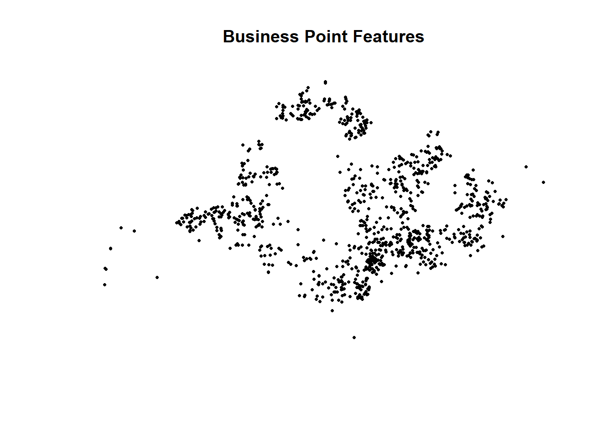
plot(st_geometry(biz_restaurant_cafe_sf), main = "Business Point Features", pch = 16, cex = 0.5)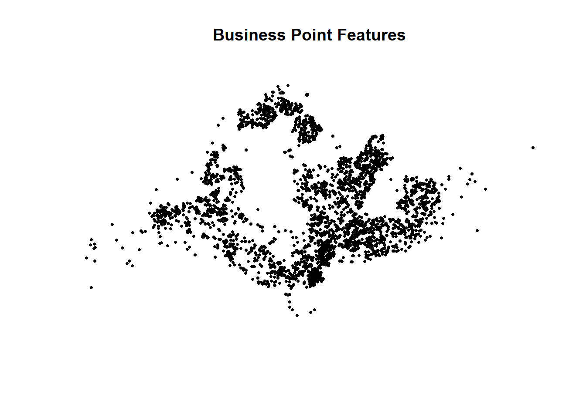
plot(st_geometry(biz_real_estate_sf), main = "Business Point Features", pch = 16, cex = 0.5)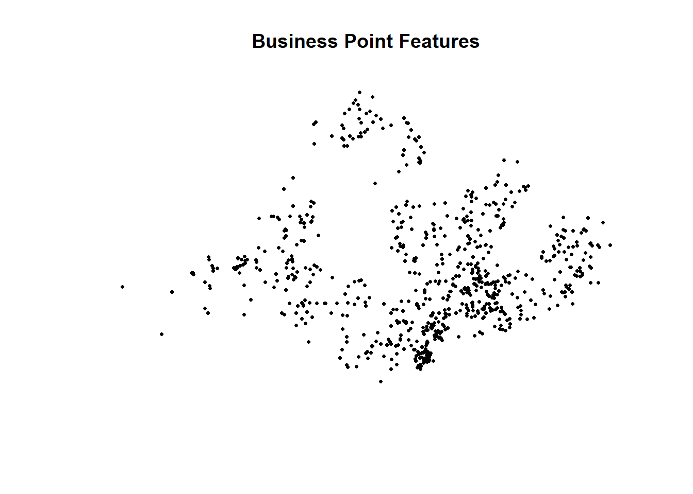
# Step 1: Create summary table from biz_with_hierarchy with both total and live counts
biz_summary <- biz_with_hierarchy %>%
group_by(primary_ssic_code) %>%
summarise(
business_count = n(),
live_business_count = sum(entity_status_description == "Live", na.rm = TRUE),
live_percentage = round(live_business_count / business_count * 100, 1),
.groups = 'drop'
) %>%
filter(!is.na(primary_ssic_code))
# Step 2: Join with ssic_final on primary_ssic_code = level_5
biz_hierarchy_summary <- biz_summary %>%
left_join(ssic_final, by = c("primary_ssic_code" = "level_5"))
# Step 3: Create concatenated descriptions
biz_pivot_table <- biz_hierarchy_summary %>%
mutate(
level_3_concat = paste(level_3, level_3_description, sep = " - "),
level_4_concat = paste(level_4, level_4_description, sep = " - "),
level_5_concat = paste(primary_ssic_code, level_5_description, sep = " - ")
) %>%
arrange(level_3_concat, level_4_concat, level_5_concat)
# Step 4: Keep only the columns we need
biz_pivot_table <- biz_pivot_table[, c("level_3_concat", "level_4_concat", "level_5_concat",
"business_count", "live_business_count", "live_percentage")]
# Step 5: Display with kable including the new column
biz_pivot_table %>%
kable(caption = "Business Distribution by SSIC Hierarchy",
col.names = c("Level 3", "Level 4", "Level 5", "Total", "Live", "Live %")) %>%
kable_styling(bootstrap_options = c("striped", "hover")) %>%
column_spec(4:6, bold = TRUE) %>%
pack_rows(index = table(biz_pivot_table$level_3_concat)) %>%
scroll_box(height = "500px")| Level 3 | Level 4 | Level 5 | Total | Live | Live % |
|---|---|---|---|---|---|
| 471 - RETAIL SALE IN NON-SPECIALISED STORES | |||||
| 471 - RETAIL SALE IN NON-SPECIALISED STORES | 4710 - Retail Sale in Non-Specialised Stores | 47101 - Supermarkets and hypermarkets | 65 | 9 | 13.8 |
| 471 - RETAIL SALE IN NON-SPECIALISED STORES | 4710 - Retail Sale in Non-Specialised Stores | 47102 - Mini-marts, convenience stores and provision shops | 657 | 101 | 15.4 |
| 471 - RETAIL SALE IN NON-SPECIALISED STORES | 4710 - Retail Sale in Non-Specialised Stores | 47103 - Department stores | 30 | 13 | 43.3 |
| 471 - RETAIL SALE IN NON-SPECIALISED STORES | 4710 - Retail Sale in Non-Specialised Stores | 47109 - Retail sale in other non-specialised stores n.e.c. | 651 | 241 | 37.0 |
| 561 - RESTAURANTS, CAFES, FOOD COURTS, FOOD KIOSKS AND BARS | |||||
| 561 - RESTAURANTS, CAFES, FOOD COURTS, FOOD KIOSKS AND BARS | 5611 - Restaurants and Cafes | 56111 - Restaurants | 1901 | 152 | 8.0 |
| 561 - RESTAURANTS, CAFES, FOOD COURTS, FOOD KIOSKS AND BARS | 5611 - Restaurants and Cafes | 56112 - Cafes | 519 | 107 | 20.6 |
| 561 - RESTAURANTS, CAFES, FOOD COURTS, FOOD KIOSKS AND BARS | 5612 - Fast Food Outlets, Food Courts and Food Kiosks | 56121 - Fast food outlets | 102 | 9 | 8.8 |
| 561 - RESTAURANTS, CAFES, FOOD COURTS, FOOD KIOSKS AND BARS | 5612 - Fast Food Outlets, Food Courts and Food Kiosks | 56122 - Food courts, coffee shops and canteens (with mainly food and beverage income) | 1062 | 275 | 25.9 |
| 561 - RESTAURANTS, CAFES, FOOD COURTS, FOOD KIOSKS AND BARS | 5612 - Fast Food Outlets, Food Courts and Food Kiosks | 56123 - Food kiosks mainly for takeaway and delivery | 484 | 216 | 44.6 |
| 561 - RESTAURANTS, CAFES, FOOD COURTS, FOOD KIOSKS AND BARS | 5613 - Pubs | 56130 - Pubs | 119 | 51 | 42.9 |
| 561 - RESTAURANTS, CAFES, FOOD COURTS, FOOD KIOSKS AND BARS | 5614 - Stalls Selling Cooked Food and Prepared Drinks | 56140 - Stalls selling cooked food and prepared drinks (including stalls at food courts and mobile food hawkers) | 1355 | 708 | 52.3 |
| 681 - REAL ESTATE ACTIVITIES WITH OWN OR LEASED PROPERTY | |||||
| 681 - REAL ESTATE ACTIVITIES WITH OWN OR LEASED PROPERTY | 6810 - Real Estate Activities with Own or Leased Property | 68101 - Real estate developers | 248 | 7 | 2.8 |
| 681 - REAL ESTATE ACTIVITIES WITH OWN OR LEASED PROPERTY | 6810 - Real Estate Activities with Own or Leased Property | 68102 - Operating of serviced apartments | 24 | 4 | 16.7 |
| 681 - REAL ESTATE ACTIVITIES WITH OWN OR LEASED PROPERTY | 6810 - Real Estate Activities with Own or Leased Property | 68103 - Letting of self-owned or leased real estate property except food courts, coffee shops and canteens (e.g. office/exhibition space, shopping mall, self-storage facilities) | 658 | 42 | 6.4 |
| 681 - REAL ESTATE ACTIVITIES WITH OWN OR LEASED PROPERTY | 6810 - Real Estate Activities with Own or Leased Property | 68104 - Letting and operating of self-owned or leased food courts, coffee shops and canteens (with mainly rental income) | 79 | 10 | 12.7 |
| 681 - REAL ESTATE ACTIVITIES WITH OWN OR LEASED PROPERTY | 6810 - Real Estate Activities with Own or Leased Property | 68105 - Collective portfolio investment funds with rental income | 59 | 7 | 11.9 |
| 681 - REAL ESTATE ACTIVITIES WITH OWN OR LEASED PROPERTY | 6810 - Real Estate Activities with Own or Leased Property | 68106 - Management of self-owned strata titled property (i.e. Management Corporation Strata Title) | 10 | 2 | 20.0 |
Based on the business summary above, we can draw some key insights about business types and survival rates:
Key insight: Asset-light, established food formats and specialized retail show better survival than capital-intensive businesses.
As the number of business points per business type is large itself, plotting all of them on mpsz - Singapore boundary will be too packed and we will not be able to extract any pattern out of it. Therefore, it is a good idea to plot them separately as below.
ggplot() +
geom_sf(data = mpsz_cl, fill = "lightgray", color = "white") +
geom_sf(data = biz_sf, aes(color = as.factor(primary_ssic_code)),
size = 0.3, alpha = 0.7) +
facet_wrap(~ primary_ssic_code) + # Remove scales = "free"
theme_minimal() +
theme(axis.text = element_blank(),
axis.ticks = element_blank(),
panel.grid = element_blank(),
legend.position = "none") + # Hide legend since facets show the codes
labs(title = "Business Locations by SSIC Code")
Based on the business location plots, here are key observations about spatial density patterns:
Food & Beverage Sector (Food & Beverages):
Retail Sector (Retail):
Real Estate Sector (Real Estate):
sg_owin <- as.owin(mpsz_cl)
# Convert sf data frames to ppp class
ppp_restaurants_all <- as.ppp(biz_restaurant_cafe_sf)
ppp_restaurants_all = ppp_restaurants_all[sg_owin]
# Calculate KDE using spatstat
kde_restaurants_all <- density(ppp_restaurants_all,
sigma = bw.diggle, # Automatic bandwidth selection
edge = TRUE,
kernel="gaussian") # Edge correction
plot(kde_restaurants_all)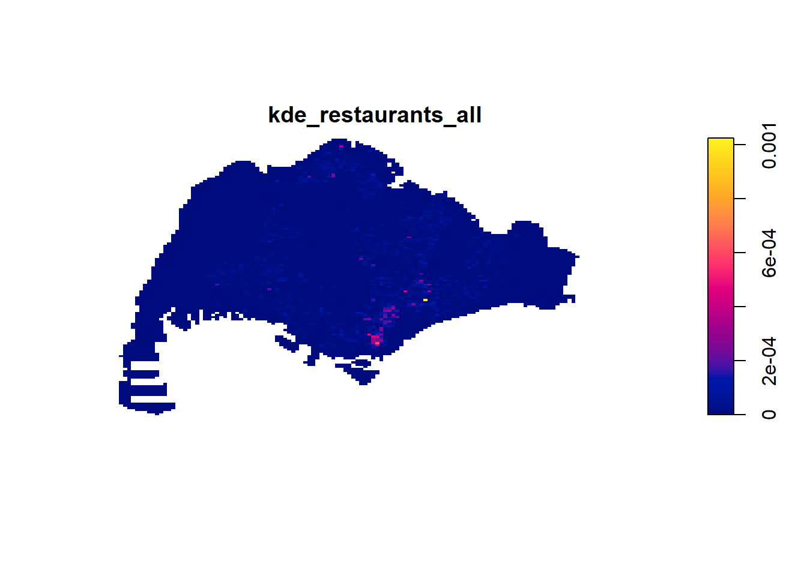

In this section, we will perform Clark-Evans tests for the 3 business entities separately, to quantify whether a point pattern is clustered, random, or uniformly spaced. The result will help us understand the underlying spatial patterns of each business type. This will inform our interpretation of the subsequent KDE analysis.
The confidence level chosen for the test is 95%. Therefore, we can set the number simulation at the minimum of nsim = 39.
The test hypotheses are: - Ho = The distribution of Food & Beverages are randomly distributed. - H1 = The distribution of Food & Beverages are not randomly distributed. The 95% confident interval will be used.
clarkevans.test(ppp_restaurants_all,
correction="none",
clipregion="sg_owin",
alternative=c("clustered"),
method="MonteCarlo",
nsim=39)
Clark-Evans test
No edge correction
Monte Carlo test based on 39 simulations of CSR with fixed n
data: ppp_restaurants_all
R = 0.35908, p-value = 0.025
alternative hypothesis: clustered (R < 1)The Clark-Evans test reveals that restaurants and cafes (SSIC Food & Beverages) in the study area exhibit a significantly clustered spatial distribution (R = 0.35908, p < 0.05). This strong clustering pattern suggests that food service establishments tend to co-locate rather than distribute randomly across the landscape. The clustering likely reflects agglomeration benefits where restaurants benefit from proximity to competitors through shared customer traffic, as well as urban planning policies that concentrate commercial activities in designated zones. This spatial concentration creates identifiable dining districts and food hubs within the study area, which has important implications for business location strategy and urban commercial planning.
The test hypotheses are: - Ho = The distribution of Retail are randomly distributed. - H1 = The distribution of Retail are not randomly distributed. The 95% confident interval will be used.
clarkevans.test(ppp_retail_all,
correction="none",
clipregion="sg_owin",
alternative=c("clustered"),
method="MonteCarlo",
nsim=39)
Clark-Evans test
No edge correction
Monte Carlo test based on 39 simulations of CSR with fixed n
data: ppp_retail_all
R = 0.45778, p-value = 0.025
alternative hypothesis: clustered (R < 1)The Clark-Evans test indicates that non-specialised retail stores (SSIC Retail) exhibit a significantly clustered spatial distribution (R = 0.46, p < 0.05). While still showing clustering behavior, these retail establishments are somewhat more dispersed than restaurants and cafes, reflecting their need to serve broader geographic markets while still benefiting from commercial agglomeration in shopping districts and retail centers.
The test hypotheses are: - Ho = The distribution of Real Estate are randomly distributed. - H1 = The distribution of Real Estate are not randomly distributed. The 95% confident interval will be used.
clarkevans.test(ppp_realestate_all,
correction="none",
clipregion="sg_owin",
alternative=c("clustered"),
method="MonteCarlo",
nsim=39)
Clark-Evans test
No edge correction
Monte Carlo test based on 39 simulations of CSR with fixed n
data: ppp_realestate_all
R = 0.44849, p-value = 0.025
alternative hypothesis: clustered (R < 1)The Clark-Evans test shows that real estate businesses (SSIC Real Estate) exhibit a significantly clustered spatial distribution (R = 0.45, p < 0.05). This clustering pattern suggests that real estate agencies tend to co-locate in commercial districts and business centers, likely benefiting from proximity to financial services, legal offices, and high foot traffic areas where property transactions commonly occur.
# Extract quantile-based hotspots
hotspot_threshold <- 0.95 # Top 5%
# For restaurants
restaurants_quantile <- quantile(kde_restaurants_all, probs = hotspot_threshold)
hotspots_restaurants_mask <- kde_restaurants_all >= restaurants_quantile
# For retail
retail_quantile <- quantile(kde_retail_all, probs = hotspot_threshold)
hotspots_retail_mask <- kde_retail_all >= retail_quantile
# For real estate
realestate_quantile <- quantile(kde_realestate_all, probs = hotspot_threshold)
hotspots_realestate_mask <- kde_realestate_all >= realestate_quantile
# Plot hotspots overlay
plot(kde_restaurants_all, main = "Registration Intent Hotspots", ribbon = FALSE)
contour(hotspots_restaurants_mask, add = TRUE, col = "red", lwd = 2)
contour(hotspots_retail_mask, add = TRUE, col = "yellow", lwd = 2)
contour(hotspots_realestate_mask, add = TRUE, col = "green", lwd = 2)
legend("topright",
legend = c("Restaurants", "Retail", "Real Estate"),
col = c("red", "yellow", "green"),
lty = 1, lwd = 2)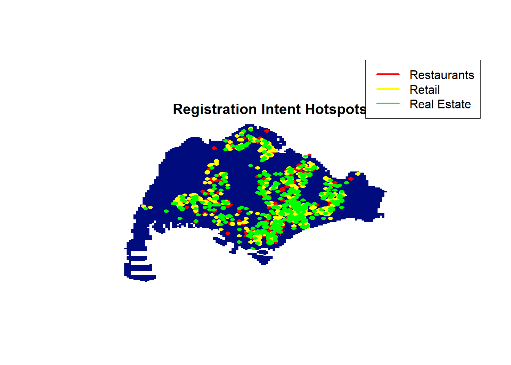
The spatstat quantile method successfully identifies distinct spatial hotspots for restaurants (red), retail (yellow), and real estate (green) across Singapore’s urban landscape. Multiple scattered hotspot areas are visible throughout the territory, demonstrating clear spatial differentiation between business types. While some areas show color overlap indicating potential co-location or mixed-use zones, each sector maintains identifiable clustering patterns. The concentration of hotspots appears predominantly in central urban areas, though peripheral clusters are also evident. However, the overlapping colors make it difficult to determine precise geographic boundaries or assess which business type dominates specific regions. The visualization effectively demonstrates that different business sectors exhibit unique spatial clustering behaviors, with the quantile method capturing these distinct locational preferences across Singapore’s commercial landscape.
# Function to create monthly ppp objects and KDE
create_monthly_ppp_kde <- function(data_sf, year_filter = 2025) {
monthly_results <- list()
for(month in 1:6) {
# Filter sf object by year and month
monthly_data_sf <- data_sf %>%
filter(YEAR == year_filter, MONTH_NUM == month)
if(nrow(monthly_data_sf) >= 10) { # Minimum sample size
# Create ppp object from sf (your method)
monthly_ppp <- as.ppp(monthly_data_sf)
monthly_ppp <- monthly_ppp[sg_owin]
# Calculate KDE using spatstat
monthly_kde <- density(monthly_ppp, sigma = bw.diggle, edge = TRUE)
monthly_results[[paste0("month_", month)]] <- list(
ppp = monthly_ppp,
kde = monthly_kde,
count = nrow(monthly_data_sf)
)
}
}
return(monthly_results)
}# Function to plot monthly progression
plot_monthly_kde <- function(monthly_list, title) {
par(mfrow = c(2, 3), mar = c(3, 3, 3, 1))
for(i in 1:6) {
month_name <- paste0("month_", i)
if(month_name %in% names(monthly_list)) {
plot(monthly_list[[month_name]]$kde,
main = paste0(title, "\nMonth ", i, " (n=", monthly_list[[month_name]]$count, ")"),
ribbon = FALSE, cex.main = 0.8)
} else {
plot.new()
text(0.5, 0.5, paste("Month", i, "\nInsufficient data"),
cex = 1.2, adj = c(0.5, 0.5))
}
}
par(mfrow = c(1, 1))
}# Create monthly analysis for each business type
monthly_retail <- create_monthly_ppp_kde(biz_retail_nonspec_sf)
monthly_restaurants <- create_monthly_ppp_kde(biz_restaurant_cafe_sf)
monthly_realestate <- create_monthly_ppp_kde(biz_real_estate_sf)plot_monthly_kde(monthly_retail, "Retail Business Registration")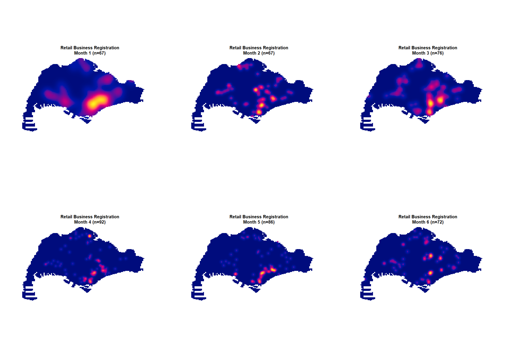
Retail registrations fluctuate between 57-92 establishments monthly in early 2025, showing more variation than restaurants. Primary hotspot concentrates in central Singapore’s CBD and Orchard Road commercial belt, with strong secondary clusters in northeastern areas likely Tampines/Bedok and northwestern regions around Jurong. This dispersed pattern reflects retail’s need to serve residential populations across multiple regional commercial centers.
plot_monthly_kde(monthly_restaurants, "Restaurant Registration")
The visualization above represents restaurant registrations in the first half of 2025, which show stable patterns with 283-344 monthly establishments consistently concentrating in the CBD and central urban core. Spatial distribution remains unchanged across months, indicating established downtown commercial districts maintain attractiveness for new ventures with minimal geographic diversification into outer residential areas.
plot_monthly_kde(monthly_realestate, "Real Estate Business Registration")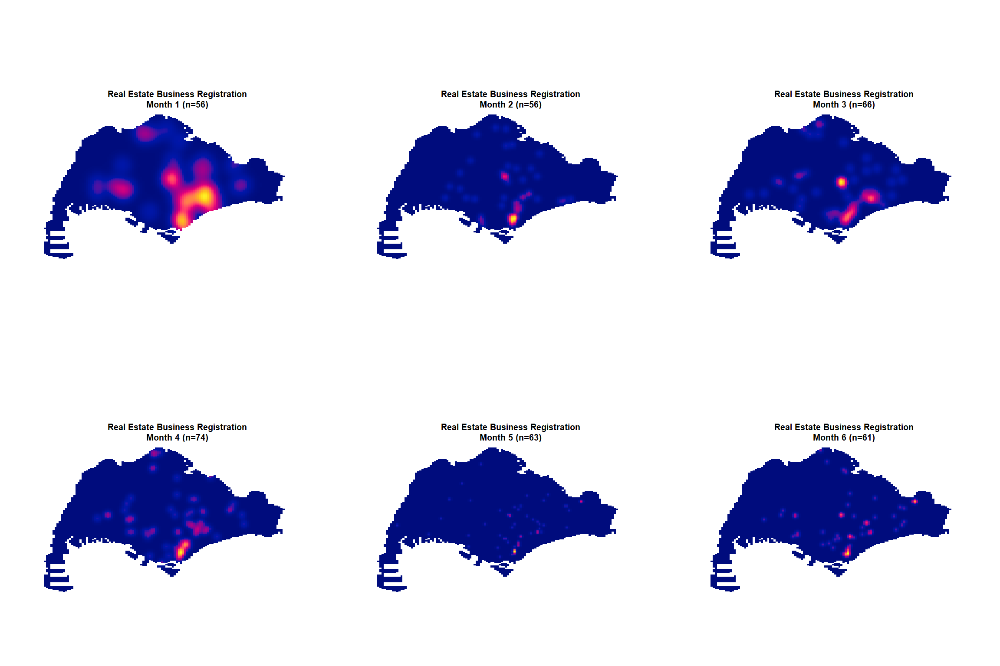
Real estate registrations vary between 61-74 establishments monthly across the first half of 2025. Activity concentrates heavily in the central business district and downtown core, with prominent hotspots in the CBD area and Marina Bay region. Secondary clusters appear in northern Singapore, likely Woodlands/Yishun areas, indicating diversified real estate development beyond traditional commercial centers.
# Create year comparison function
create_annual_ppp_comparison <- function(data_sf) {
annual_results <- list()
# 2024 data (first half)
data_2024_h1_sf <- data_sf %>%
filter(YEAR == 2024, MONTH_NUM %in% 1:6)
# 2025 data (first half)
data_2025_h1_sf <- data_sf %>%
filter(YEAR == 2025, MONTH_NUM %in% 1:6)
if(nrow(data_2024_h1_sf) >= 10) {
ppp_2024 <- as.ppp(data_2024_h1_sf)
ppp_2024 <- ppp_2024[sg_owin] # Apply Singapore window
annual_results$year_2024 <- list(
ppp = ppp_2024,
kde = density(ppp_2024, sigma = bw.diggle, edge = TRUE),
count = nrow(data_2024_h1_sf)
)
}
if(nrow(data_2025_h1_sf) >= 10) {
ppp_2025 <- as.ppp(data_2025_h1_sf)
ppp_2025 <- ppp_2025[sg_owin] # Apply Singapore window
annual_results$year_2025 <- list(
ppp = ppp_2025,
kde = density(ppp_2025, sigma = bw.diggle, edge = TRUE),
count = nrow(data_2025_h1_sf)
)
}
return(annual_results)
}# Create a function to plot year-over-year comparison
plot_annual_comparison <- function(annual_list, title) {
if(length(annual_list) == 2) {
par(mfrow = c(1, 2), mar = c(3, 3, 3, 1))
plot(annual_list$year_2024$kde,
main = paste0(title, "\n2024 H1 (n=", annual_list$year_2024$count, ")"),
ribbon = TRUE,
cex.main = 1,
ribargs = list(cex.axis = 0.7)) # Adjust ribbon text size
plot(annual_list$year_2025$kde,
main = paste0(title, "\n2025 H1 (n=", annual_list$year_2025$count, ")"),
ribbon = TRUE,
cex.main = 1,
ribargs = list(cex.axis = 0.7)) # Adjust ribbon text size
par(mfrow = c(1, 1))
}
}# Annual comparison for each business type (using sf objects)
annual_restaurants <- create_annual_ppp_comparison(biz_restaurant_cafe_sf)
annual_retail <- create_annual_ppp_comparison(biz_retail_nonspec_sf)
annual_realestate <- create_annual_ppp_comparison(biz_real_estate_sf)Based on the visualization below, Year-over-year analysis reveals significant growth and spatial diversification across all three business sectors in H1 2025. More notably, the spatial distribution patterns demonstrate a clear shift from concentrated urban clustering to geographic diversification. The intense density hotspots visible in H1 2024—particularly around the CBD and Marina Bay areas—have diffused considerably in 2025, indicating businesses are expanding into secondary commercial districts and suburban locations. This spatial deconcentration suggests either market saturation in prime central areas driving entrepreneurs to seek opportunities in emerging neighborhoods, or improved infrastructure and zoning policies making previously less attractive areas more viable for business establishment.
plot_annual_comparison(annual_retail, "Retail Registration")
plot_annual_comparison(annual_restaurants, "Restaurant Registration")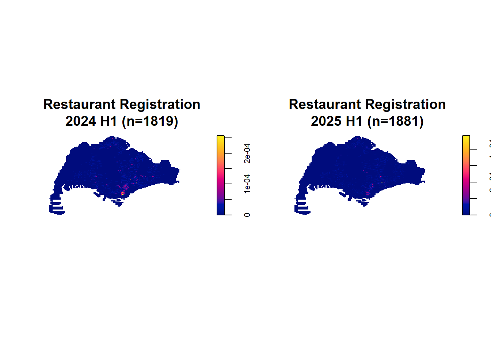
plot_annual_comparison(annual_realestate, "Real Estate Registration")
This section is to examine spatial relationships beyond simple density mapping to reveal underlying clustering processes and business interaction patterns. My approach for this analysis is as follows:
I employ L-function analysis for its superior interpretability over K-functions, where deviations above/below the theoretical line clearly indicate clustering or regularity.
The Complete Spatial Randomness test with nsim = 39 provides statistically valid significance testing (p < 0.05) while maintaining computational efficiency for this exploratory spatial analysis of business registration patterns.
Calculate L-functions with border correction method, then plot
L_retail_all = Lest(ppp_retail_all, correction = "border")
plot(L_retail_all, . -r ~ r,
ylab= "L(d)-r", xlab = "d(m)")
Performing Complete Spatial Randomness Test
l_env_retail.csr <- envelope(ppp_retail_all, Lest, nsim = 39,
correction = "border", rank = 1, glocal=TRUE)Generating 39 simulations of CSR ...
1, 2, 3, 4, 5, 6, 7, 8, 9, 10, 11, 12, 13, 14, 15, 16, 17, 18, 19, 20,
21, 22, 23, 24, 25, 26, 27, 28, 29, 30, 31, 32, 33, 34, 35, 36, 37, 38,
39.
Done.Calculate L-functions with border correction method, then plot
L_restaurants_all = Lest(ppp_restaurants_all, correction = "border")
plot(L_restaurants_all, . -r ~ r,
ylab= "L(d)-r", xlab = "d(m)")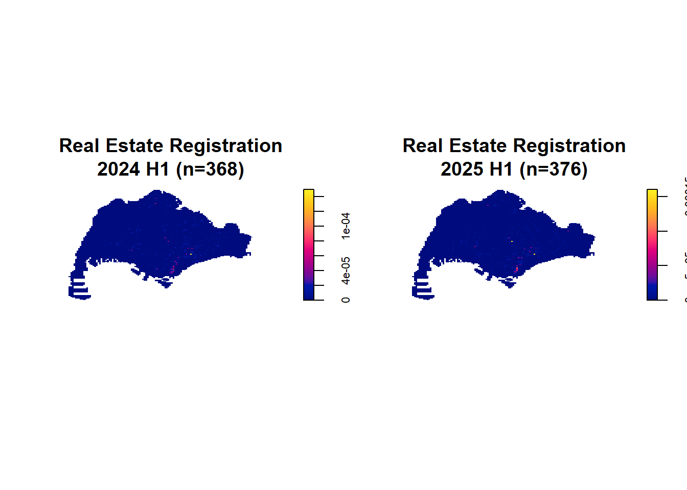
Performing Complete Spatial Randomness Test
l_env_restaurants.csr <- envelope(ppp_restaurants_all, Lest, nsim = 39,
correction = "border", rank = 1, glocal=TRUE)Generating 39 simulations of CSR ...
1, 2, 3, 4, 5, 6, 7, 8, 9, 10, 11, 12, 13, 14, 15, 16, 17, 18, 19, 20,
21, 22, 23, 24, 25, 26, 27, 28, 29, 30, 31, 32, 33, 34, 35, 36, 37, 38,
39.
Done.Calculate L-functions with border correction method, then plot
L_realestate_all = Lest(ppp_realestate_all, correction = "border")
plot(L_realestate_all, . -r ~ r,
ylab= "L(d)-r", xlab = "d(m)")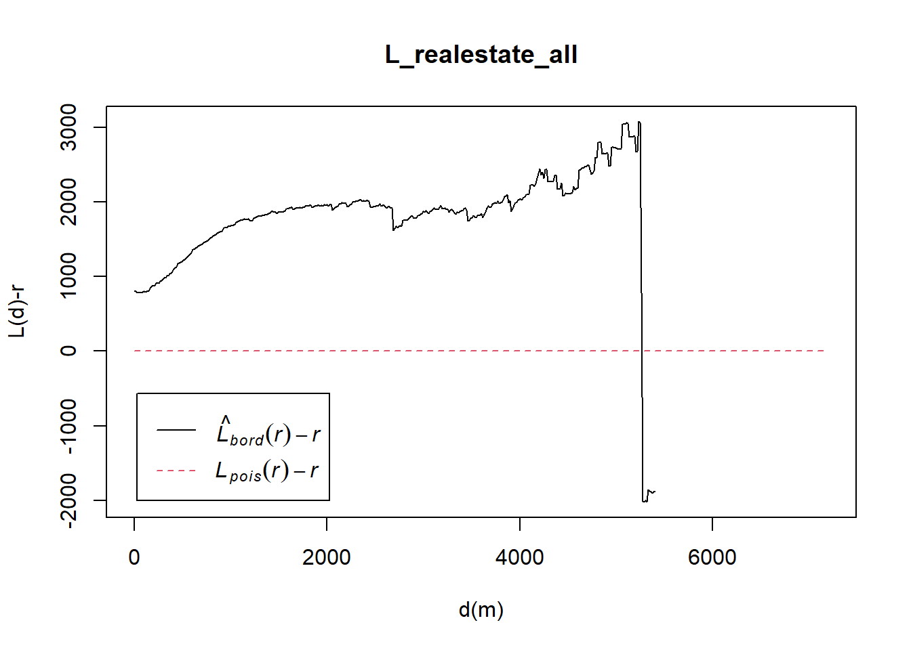
Performing Complete Spatial Randomness Test
l_env_realestate.csr <- envelope(ppp_realestate_all, Lest, nsim = 39,
correction = "border", rank = 1, glocal=TRUE)Generating 39 simulations of CSR ...
1, 2, 3, 4, 5, 6, 7, 8, 9, 10, 11, 12, 13, 14, 15, 16, 17, 18, 19, 20,
21, 22, 23, 24, 25, 26, 27, 28, 29, 30, 31, 32, 33, 34, 35, 36, 37, 38,
39.
Done.The F-function (Empty Space Function) measures the distance from randomly selected locations to the nearest business point, quantifying spatial accessibility and identifying areas with insufficient business coverage. Interpretation:
Computing F-function estimation, then plot
F_retail_all = Lest(ppp_retail_all, correction = "border")
plot(F_retail_all)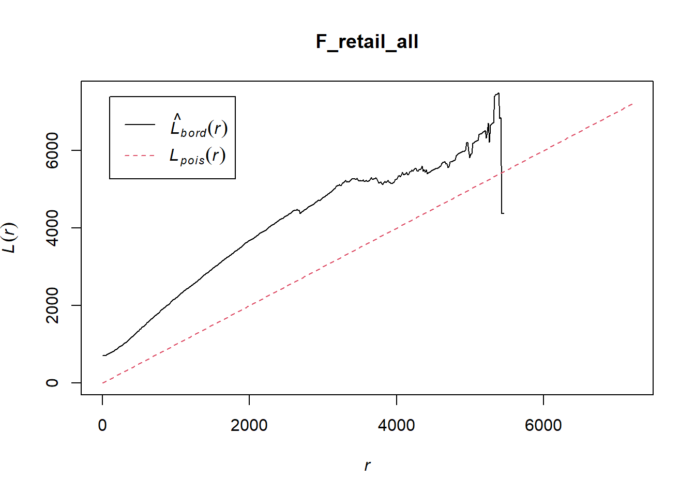
Performing Complete Spatial Randomness Test
F_retail_all.csr <- envelope(ppp_retail_all, Fest, nsim = 39, rank = 1, glocal=TRUE)Generating 39 simulations of CSR ...
1, 2, 3, 4, 5, 6, 7, 8, 9, 10, 11, 12, 13, 14, 15, 16, 17, 18, 19, 20,
21, 22, 23, 24, 25, 26, 27, 28, 29, 30, 31, 32, 33, 34, 35, 36, 37, 38,
39.
Done.plot(F_retail_all.csr, . - r ~ r, ylab= "F(d)-r", xlab = "d(m)")
Computing F-function estimation, then plot
F_restaurants_all = Lest(ppp_restaurants_all, correction = "border")
plot(F_restaurants_all)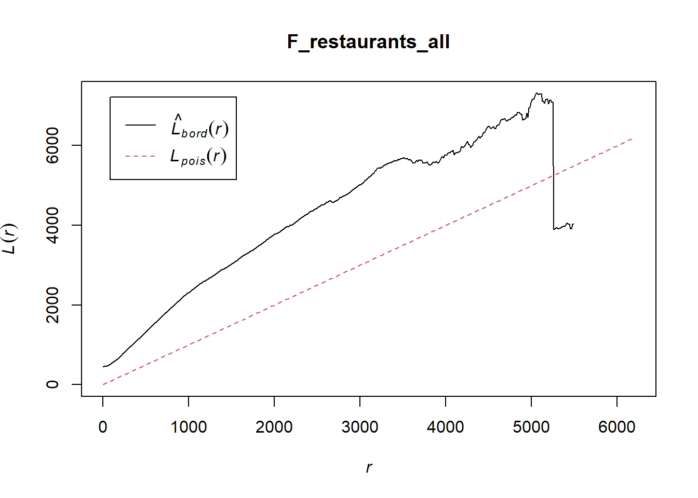
Performing Complete Spatial Randomness Test
F_restaurants_all.csr <- envelope(ppp_restaurants_all, Fest, nsim = 39, rank = 1, glocal=TRUE)Generating 39 simulations of CSR ...
1, 2, 3, 4, 5, 6, 7, 8, 9, 10, 11, 12, 13, 14, 15, 16, 17, 18, 19, 20,
21, 22, 23, 24, 25, 26, 27, 28, 29, 30, 31, 32, 33, 34, 35, 36, 37, 38,
39.
Done.plot(F_restaurants_all.csr, . - r ~ r, ylab= "F(d)-r", xlab = "d(m)")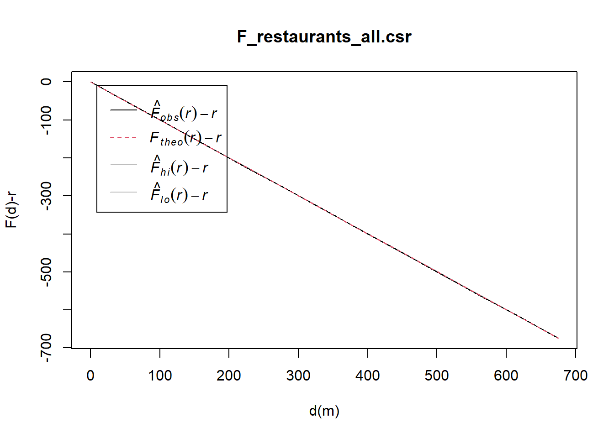
Error in UseMethod("distmap") :
no applicable method for 'distmap' applied to an object of class "im"Computing F-function estimation, then plot
F_realestate_all = Lest(ppp_realestate_all, correction = "border")
plot(F_realestate_all)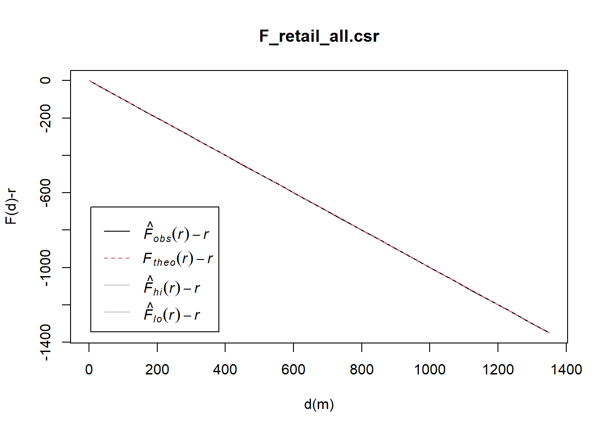
Performing Complete Spatial Randomness Test
F_realestate_all.csr <- envelope(ppp_realestate_all, Fest, nsim = 39, rank = 1, glocal=TRUE)Generating 39 simulations of CSR ...
1, 2, 3, 4, 5, 6, 7, 8, 9, 10, 11, 12, 13, 14, 15, 16, 17, 18, 19, 20,
21, 22, 23, 24, 25, 26, 27, 28, 29, 30, 31, 32, 33, 34, 35, 36, 37, 38,
39.
Done.plot(F_realestate_all.csr, . - r ~ r, ylab= "F(d)-r", xlab = "d(m)")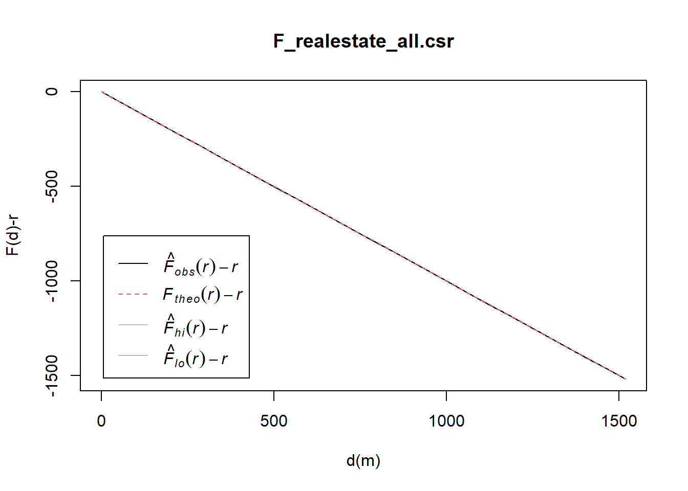
The cross L-function envelope method tests spatial interactions between business types using Monte Carlo simulations to create confidence envelopes under spatial independence. The observed cross L-function is compared against these envelopes to determine statistical significance. Interpretation:
First, we create Multitype Point Pattern for Cross-Function Analysis
# Get coordinates and create data frame with marks
restaurants_coords <- st_coordinates(biz_restaurant_cafe_sf)
retail_coords <- st_coordinates(biz_retail_nonspec_sf)
realestate_coords <- st_coordinates(biz_real_estate_sf)
# Combine all coordinates with business type marks
multitype_data <- data.frame(
x = c(restaurants_coords[,1], retail_coords[,1], realestate_coords[,1]),
y = c(restaurants_coords[,2], retail_coords[,2], realestate_coords[,2]),
marks = c(rep("Restaurants", nrow(restaurants_coords)),
rep("Retail", nrow(retail_coords)),
rep("RealEstate", nrow(realestate_coords)))
)
# Create multitype ppp object
ppp_multitype <- ppp(x = multitype_data$x,
y = multitype_data$y,
marks = as.factor(multitype_data$marks),
window = sg_owin)
# Verify it's multitype
print(is.multitype(ppp_multitype)) # Should return TRUE[1] TRUE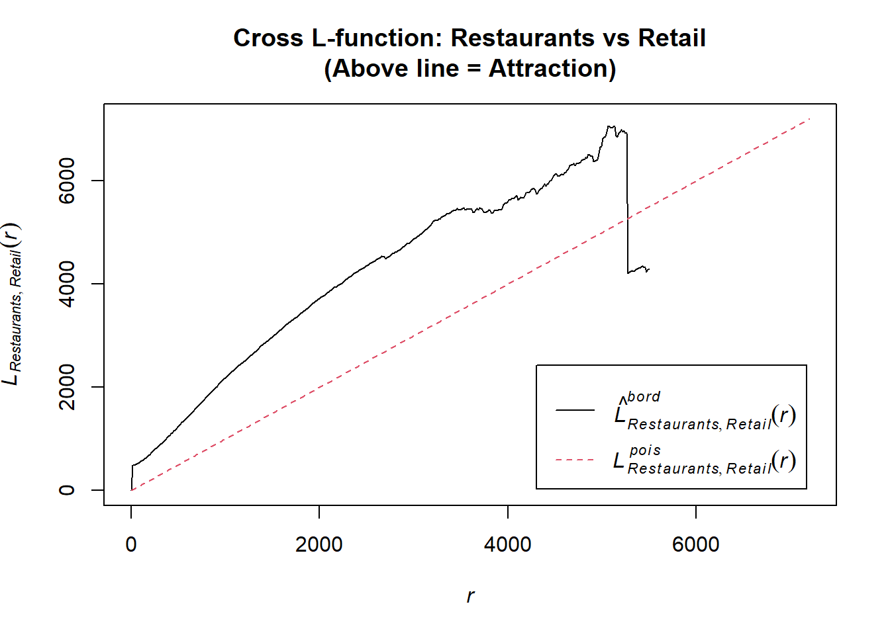
# Envelope test for statistical significance
cross_l_env_rest_retail <- envelope(ppp_multitype, Lcross, nsim = 39,
i = "Restaurants", j = "Retail",
correction = "border", verbose = FALSE)
# Plot cross L-function envelope
plot(cross_l_env_rest_retail, main = "Cross L Envelope: Restaurants ↔ Retail\n(Above = Attraction, Below = Repulsion)")
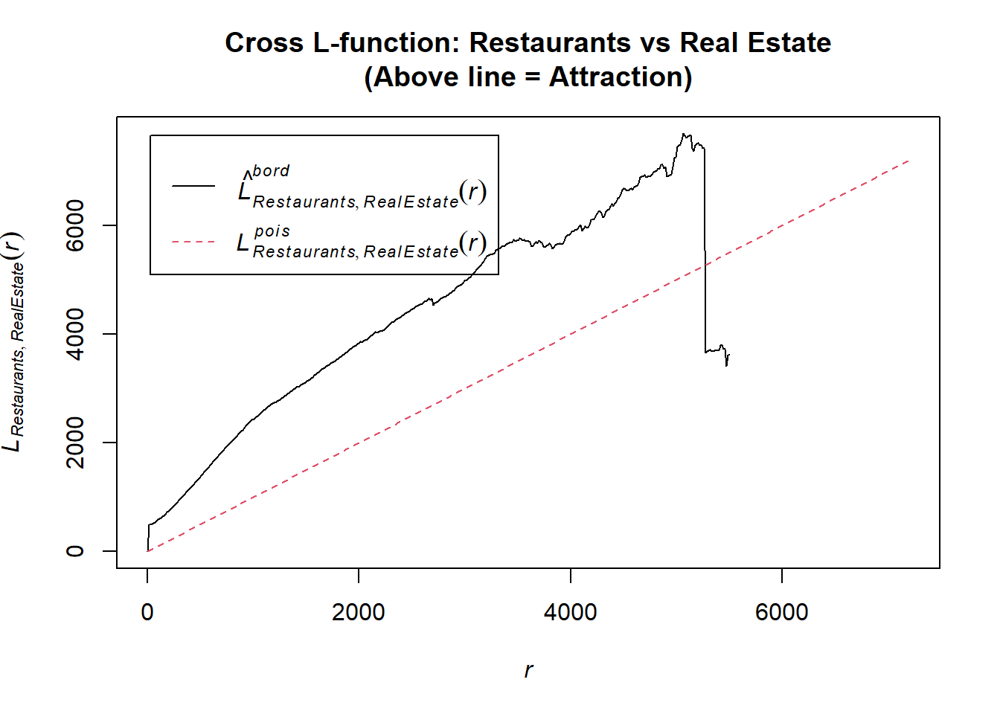
# Envelope test for statistical significance
cross_l_env_rest_realestate <- envelope(ppp_multitype, Lcross, nsim = 39,
i = "Restaurants", j = "RealEstate",
correction = "border", verbose = FALSE)
# Plot cross L-function envelope
plot(cross_l_env_rest_realestate, main = "Cross L Envelope: Restaurants ↔ Real Estate\n(Above = Attraction, Below = Repulsion)")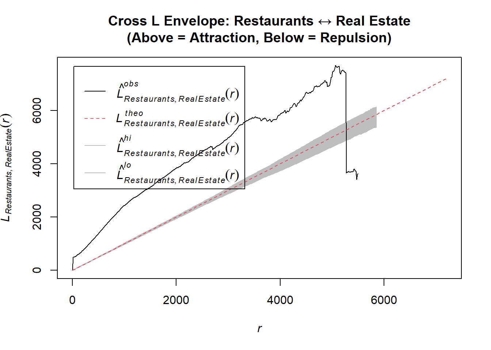
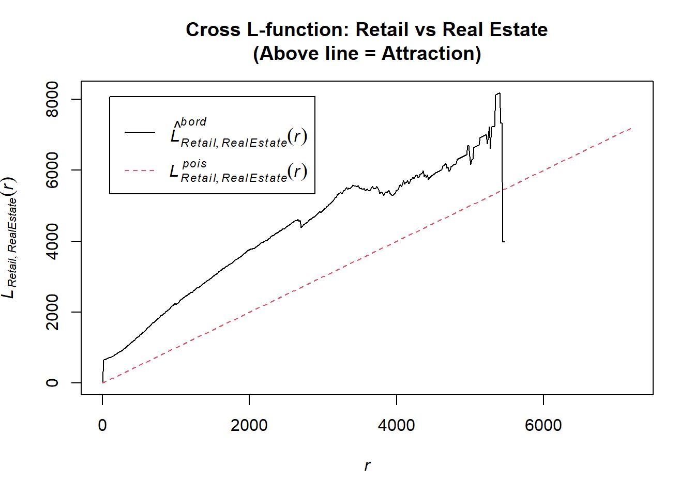
# Envelope test for statistical significance
cross_l_env_retail_realestate <- envelope(ppp_multitype, Lcross, nsim = 39,
i = "Retail", j = "RealEstate",
correction = "border", verbose = FALSE)
# Plot cross L-function envelope
plot(cross_l_env_retail_realestate, main = "Cross L Envelope: Retail ↔ Real Estate\n(Above = Attraction, Below = Repulsion)")
The Combined F-L Function Analysis provides comprehensive spatial pattern assessment by examining business clustering from two complementary perspectives: - The L-function measures inter-business distances to detect clustering intensity (above envelope = clustered, below = regular) - The F-function analyzes empty space accessibility from random locations (below envelope = dense coverage, above = sparse distribution).
Together, they reveal complete spatial patterns: consistent results indicate strong clustering or regularity, while conflicting results suggest complex mixed patterns requiring detailed investigation.
assess_clustering <- function(l_env, f_env, business_type) {
# Extract test results
l_result <- if(any(l_env$obs > l_env$hi)) "CLUSTERED" else if(any(l_env$obs < l_env$lo)) "REGULAR" else "RANDOM"
f_result <- if(any(f_env$obs < f_env$lo)) "CLUSTERED" else if(any(f_env$obs > f_env$hi)) "REGULAR" else "RANDOM"
# Consistency check
consistent <- l_result == f_result
return(data.frame(
Business_Type = business_type,
L_Function = l_result,
F_Function = f_result,
Consistent = consistent,
Pattern = if(consistent) l_result else "MIXED_SIGNALS"
))
}clustering_assessment <- bind_rows(
assess_clustering(l_env_restaurants.csr, F_restaurants_all.csr, "Restaurants_561"),
assess_clustering(l_env_retail.csr, F_retail_all.csr, "Retail_471"),
assess_clustering(l_env_realestate.csr, F_realestate_all.csr, "RealEstate_681")
)
print("=== F-FUNCTION AND L-FUNCTION CLUSTERING ASSESSMENT ===")[1] "=== F-FUNCTION AND L-FUNCTION CLUSTERING ASSESSMENT ==="print(clustering_assessment) Business_Type L_Function F_Function Consistent Pattern
1 Restaurants_561 CLUSTERED CLUSTERED TRUE CLUSTERED
2 Retail_471 CLUSTERED CLUSTERED TRUE CLUSTERED
3 RealEstate_681 CLUSTERED CLUSTERED TRUE CLUSTEREDassess_cross_interaction <- function(cross_l_env, pair_name) {
interaction <- if(any(cross_l_env$obs > cross_l_env$hi)) "ATTRACTION" else
if(any(cross_l_env$obs < cross_l_env$lo)) "REPULSION" else "INDEPENDENT"
return(data.frame(
Business_Pair = pair_name,
Interaction_Type = interaction
))
}interaction_assessment <- bind_rows(
assess_cross_interaction(cross_l_env_rest_retail, "Restaurants ↔ Retail"),
assess_cross_interaction(cross_l_env_rest_realestate, "Restaurants ↔ Real Estate"),
assess_cross_interaction(cross_l_env_retail_realestate, "Retail ↔ Real Estate")
)
print("\n=== CROSS-INTERACTION ASSESSMENT ===")[1] "\n=== CROSS-INTERACTION ASSESSMENT ==="print(interaction_assessment) Business_Pair Interaction_Type
1 Restaurants ↔ Retail ATTRACTION
2 Restaurants ↔ Real Estate ATTRACTION
3 Retail ↔ Real Estate ATTRACTIONThis comprehensive dual-layer spatial analysis of Singapore’s business registration patterns from 2024-2025 provides crucial evidence-based insights for strategic urban land use planning and management. The consistent clustering patterns across restaurants (561), retail (471), and real estate (681) business types, particularly concentrated in Marina Bay and CBD areas, demonstrate the powerful influence of agglomeration economics on business location decisions. The F-function and L-function analyses reveal minimal empty space and strong clustering tendencies in these prime districts, indicating market-driven spatial optimization that urban planners should acknowledge and support rather than resist.
The findings advocate for a multi-tiered commercial development strategy that balances intensification of successful business ecosystems with strategic decentralization to underserved areas. Marina Bay and CBD’s dominance necessitates enhanced mixed-use zoning policies with higher plot ratios and vertical integration requirements to maximize land efficiency while maintaining sustainable density levels. Simultaneously, the identification of excessive empty space in peripheral regions like Yishun, Sembawang, and Pasir Ris presents opportunities for targeted satellite commercial hub development through strategic incentives and infrastructure investments.
The cross L-function results demonstrating attraction relationships between business types support integrated commercial corridor development, enabling Singapore to create seamless business ecosystems that leverage synergistic relationships. However, the intense clustering also raises legitimate concerns about market oversaturation, commercial rent inflation, and equitable access to services across the island. Urban planners must implement competition management policies including business diversity quotas and affordable commercial space preservation to maintain market health.
The registration intent versus business success comparison reveals that entrepreneur preferences align with viable business locations, suggesting market mechanisms effectively identify optimal commercial areas. This validates a planning approach that works with natural clustering tendencies while proactively developing alternative business districts to ensure sustainable, equitable urban growth. These evidence-based recommendations provide a robust framework for managing Singapore’s commercial landscape evolution while maintaining its position as a leading global business hub.
This study presents several methodological limitations that may affect the comprehensiveness of findings.
SSIC aggregation at 3-digit level potentially masks important intra-category spatial variations - for example, fine-dining restaurants (56111) versus fast-food outlets (56112) likely exhibit distinct clustering behaviors that remain undetected in the current 561-level analysis.
Temporal scope limitation to 18 months (Jan 2024-Jun 2025) may not capture long-term cyclical patterns or seasonal business formation trends.
Scale dependency represents another constraint - the analysis focuses on citywide patterns without examining neighborhood-level clustering variations or micro-location factors influencing business success within identified hotspots.